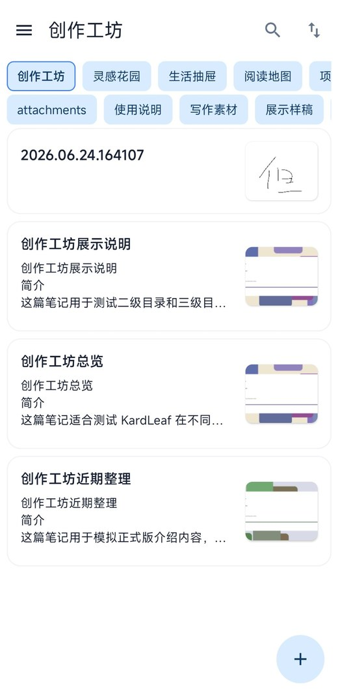

本地文件优先
正文保存为真实的 Markdown / TXT 文件。备份、迁移、同步和跨应用编辑都更直接。
notes/├─ 灵感.md└─ 项目/计划.md

KardLeaf 是一款本地优先、轻量简洁的 Android Markdown 笔记应用。 不强制登录，不锁定格式，让记录、整理与迁移都保持自由。
保留 Markdown 的自由，同时补齐移动端记录、整理、预览与管理体验。
正文保存为真实的 Markdown / TXT 文件。备份、迁移、同步和跨应用编辑都更直接。
常用 Markdown 格式、任务、图片、代码块和公式，写作与检查排版可以快速切换。
支持多级目录、顶部分类、侧边栏、标签和属性，让小记录与大型笔记库都井然有序。
可以配合 Obsidian、VS Code、Typora、WebDAV 或 Syncthing 使用同一批文件。
不强制注册账号，不强制上传云端。你可以自己决定笔记放在哪里、怎样同步。
从快速记录到长文整理，界面始终围绕内容本身展开。
从 GitHub Releases 获取最新版 APK。安装前请允许浏览器或文件管理器安装未知来源应用。